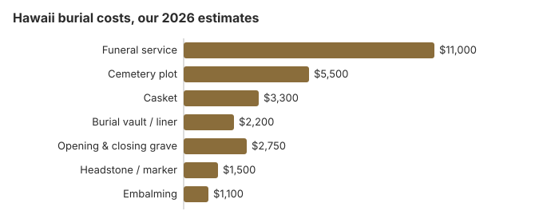

Burial Costs in Hawaii (2026)
Hawaii is among the costliest places in our model to bury someone: $25,250 to $29,750 with the cemetery's charges, including an $11,000 funeral service and a $5,500 plot. Hawaii also has unusually broad rules for disturbing a grave, a state program that pays toward cremation but not a plot, and veterans cemeteries on every major island. This page covers the costs, those rules, and burial at sea as an alternative many families weigh.
What a Hawaii Burial Costs
| Item | Hawaii figure | Low to high |
|---|---|---|
| Funeral service | $11,000 | $8,250 – $14,300 |
| Cemetery plot | $5,500 | $2,750 – $11,000 |
| Casket | $3,300 | $1,100 – $8,800 |
| Burial vault / liner | $2,200 | $800 – $10,000 |
| Opening & closing grave | $2,750 | $500 – $3,000 |
| Headstone / marker | $1,500 | $500 – $5,000+ |
| Embalming | $1,100 | $500 – $1,500 |
About the Hawaii estimates: they come from our model, not a survey of Hawaii mortuaries or cemeteries, so check real quotes against them; they are not a quote or professional advice. Read our method and the disclaimer.

With the cemetery fees, we put a Hawaii burial at $25,250 to $29,750; the casket and headstone account for most of the spread.
Hawaii Burial Types
Burial at Sea and Other Hawaii Choices
Ocean burial is governed by the EPA's general permit under 40 CFR 229.1, and scattering on land needs the landowner's permission. Many Hawaii families who choose cremation keep or scatter the ashes rather than buying a plot, and the National Memorial Cemetery of the Pacific in Honolulu accepts cremated remains of eligible veterans. For a full-body burial at sea, the EPA rule requires the body to be prepared so it sinks quickly and permanently, and only flowers and wreaths that break down may go overboard with it. The family or the captain must report the burial to the EPA regional office within 30 days. The U.S. Navy also commits the remains of eligible veterans to the sea from its ships at no charge, though families cannot attend those services.
Burial Resources
- Funeral Consumers AllianceNonprofit consumer advocacy for funeral pricing
- Headstone & Monument GuideCosts, types, and buying tips
- Green Burial OptionsEco-friendly and natural alternatives
- Best Online Casket RetailersCaskets bought online often cost less
- Best Burial InsuranceCompare plans to cover burial expenses
Compare Funeral Costs
- Average Funeral Cost in 2026National cost breakdown with real prices
- Cremation vs. Burial Cost ComparisonSide-by-side price comparison to help you decide
- Funeral Cost BreakdownEvery line item explained: know what you're paying for
- Cheapest Funeral OptionsLower-cost alternatives, with typical price ranges
- Direct Cremation: Most Affordable OptionNFDA 2023 median $2,645 with a family-supplied container (latest available)
- How to Compare Funeral PricesStep-by-step guide to getting the best price
Bringing Down a Hawaii Burial Bill
Ways to pay less in Hawaii:
- Ask each cemetery for written prices. Cemeteries sit outside the FTC Funeral Rule, so request the plot, container, opening and perpetual care charges and check them against our estimates of $5,500, $2,200 and $2,750.
- Ask about burial without a vault. Some cemeteries may allow a plain container or no outer container; ask before you buy one. If an outer container is required, ask whether a plain liner meets the rule, and get the price of each from both the cemetery and the funeral home before choosing.
- Weigh burial at sea. Federal rules allow burial of a body at sea at least three nautical miles from land and 600 feet deep, and cremated remains at least three nautical miles out, with notice to the EPA within 30 days (40 CFR 229.1).
- Price cremation as well. About 70% of Hawaii deaths end in cremation on this site's figures, and asking for both prices shows how much of the burial bill is the cemetery.
- Weigh the $3,300 Hawaii casket estimate against the casket buying guide and the list of online casket retailers; a funeral home cannot charge a fee for a casket you bring, though shipping one to the islands adds cost.
- Price the marker separately. Ask the cemetery what markers it allows, then get a monument dealer's quote to compare.
For ways to bring a Hawaii burial bill down, see our affordable funeral options guide or payment assistance programs.
Frequently Asked Questions
What is the price of a Hawaii burial?
Our Hawaii estimate is $25,250 to $29,750: an $11,000 funeral service, a $5,500 plot, a $2,200 vault, $2,750 for opening and closing, a $3,300 casket and a $500 to $5,000 headstone.
Must a Hawaii grave have a vault?
Any requirement comes from the cemetery, so ask it what it accepts. A liner usually costs less than the $2,200 vault we estimate; vaults run from $800 to $10,000.
What is the cheapest burial in Hawaii?
On a Hawaii price list the cheapest burial is normally direct burial, which leaves out embalming, a viewing and a service. Burial at sea or cremation can cost less again, since neither needs a plot.
How should I compare Hawaii cemeteries?
Ask at least two cemeteries for an itemized sheet covering the plot, the opening and closing, the container rule and perpetual care, and note that adding a later burial to an existing grave needs a Department of Health disinterment permit.
What does a Hawaii burial total?
Service $11,000, plot $5,500, casket $3,300, vault $2,200, opening $2,750 and headstone $500 to $5,000: $25,250 to $29,750 before cash advance items.
Is natural burial possible in Hawaii?
Whether a natural burial is possible depends on the cemetery: ask if it will take an unembalmed body in a biodegradable container with no vault; our green burial guide lists what to ask.
More for Hawaii
When Hawaii requires a disinterment permit
Hawaii's rule is wider than most. A Department of Health disinterment permit is needed for almost any disturbance of a grave. That includes reburying the remains in the same spot, adding another burial (even cremated remains) to an existing grave, and moving remains temporarily to repair a cemetery (HAR ch. 11-118; checked October 29, 2026).
- Applying: families cannot apply on their own. A registered mortuary or cemetery files online for them, and an owner of a family burial plot does not count as a cemetery. Every survivor with equal or higher priority must consent in writing.
- Moving the remains: a disinterred body cannot be transported, on-island or out of state, until the disinterment permit is issued and a burial-transit permit follows.
- Old burial sites: prehistoric and historic burial sites fall under the Department of Land and Natural Resources instead.
Who regulates burial in Hawaii, and what help exists
For a license question about a Hawaii cemetery or a prepaid funeral plan seller, the Hawaii Department of Commerce and Consumer Affairs (DCCA) (808-586-3000) licenses both, and its Regulated Industries Complaints Office takes complaints at 808-586-2670.
A Hawaii family does not need a funeral director for burial; Hawaii is not one of the nine states on the Funeral Consumers Alliance list, so the plot, opening and container can be settled with the cemetery directly.
Burial needs a disposition permit. Cremation has no fixed waiting period in Hawaii, but it too needs a permit (HRS §§ 338-23, 338-25).
State assistance
Hawaii's program does not pay for a plot. An unclaimed body is cremated with up to $1,600 paid to the provider, and the family of an eligible assistance recipient can apply within 60 days for a lump sum equal to Social Security's (Haw. Rev. Stat. § 346-15; HAR ch. 17-1745). Social Security's own death payment is $255, and only a qualifying spouse or child receives it.
Veterans
The National Memorial Cemetery of the Pacific (808-532-3720) takes cremated remains only. The state veterans cemeteries take burials: Hawaii State Veterans Cemetery on Oahu (808-369-3575), Kauai (808-241-4460), Lanai (808-565-7086), East and West Hawaii (808-961-8311), Maui (808-876-4534) and Molokai (808-553-3222). The plot and marker are free for an eligible veteran (VA National Cemetery Administration).
Hawaii burial checklist
- Get written prices from two cemeteries and two mortuaries.
- Ask the cemetery whether it requires an outer container.
- If the person received state assistance, apply to DHS within 60 days.
- For a veteran, call the island's state veterans cemetery first.
- Report a misleading cemetery or pre-need seller to 808-586-2670.